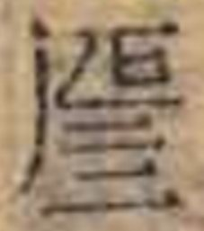

來源：東里書齋原頁
重栞宋本尚書注䟽附挍勘記
尚書注疏卷第二十宋板同古本作尚書卷第十三文侯之命第三十周書孔氏傳
文侯之命第三十 周書
所以名篇古本篇下有也字按纂傳移此四字於篇題傳末文義較妥但未必孔氏元文爾
課之瓚宋板纂傳課作謂毛本作祼○案作謂山井鼎曰與周禮注合
晉文侯鄭武公夾輔王室者爲大國宋板者作晉按者字非也
王若曰父義和義古本作誼注同今本按陸氏曰義本亦作誼與古本合作誼者葢古文也作義者今文也馬云能以義和諸侯則馬本作誼鄭氏讀義爲儀則鄭本作義古文與馬本同今文與鄭本同
而布聞在下居古本岳本宋板纂傳居作民
曰姓大國毛本曰作同是也○按宋板上句之末有曰字此遂誤同爲曰耳
在令王之先祖毛本令作今案所改是也
而遭天大罪過按而字上疑有缺文傳依經釋訓無所遺漏此經有嗣字傳未釋
即我御事唐石經古本岳本閩本葛本毛本即作既○按作即是也王鳴盛曰傳及疏亦皆言即及按漢書成帝紀鴻嘉元年詔曰書不云乎即我御事文穎注云即尚書文侯之命篇中辭也
無有耆宿壽考俊德古本俊作雋
非平王所知閩本明監本纂傳同毛本王誤作生大謬
其惟當憂念我纂傳惟作誰
嗚呼能有成功古本嗚呼作於乎
汝克紹乃顯祖唐石經古本岳本宋板蔡傳紹作昭紹字非也毛本亦誤石經考文提要云孔安國傳汝能明汝顯祖唐叔之道明訓昭也○按疏云昭乃顯祖不知所斥是宜作昭明矣此殆因下紹乃辟而誤
汝功我所善之古本汝下有之字岳本善下無之字與疏標目合
以思謂未得浦鏜云謂當惟字誤按浦云是也
更歎而爲言宋板更下有復字是也
不於上文作傳宋板不字闕
王肅云云古本云字不重按云云疑當作亦云
盧弓一盧矢百古本盧並作玈傳同○按正義中玈字凡六見且曰彤字從丹玈字從元故彤赤玈黑也據此則可知尚書經文傳文皆本作玈今經傳皆作盧者未知正義本與陸氏釋文本所據有異抑陸氏本亦作玈天寶三載改作盧音義中玈字爲宋開寶中所刪周禮司弓矢疏云文侯之命賜之彤弓玈弓此段玉裁說也其詳在尚書撰異
告其先祖諸有德美見記也浦鏜云者誤也
是諸侯有大功浦鏜云是當衍文
傳父往至相安宋板相作自與注合
費誓第三十一 周書
魯侯伯禽宅曲阜史繩祖學齋佔畢云今文尚書費誓首句云魯侯命伯禽宅曲阜予嘗疑魯侯即伯禽也如何更自出命此字極害義諸家注解咸莫能剖析今觀古文尚書元無命字止曰𣥐{𠬡-又+天}柏{人/𠚍/(𠂈𠁡)}𡧪{𠀈-丿} 
東郊不開開唐石經初作闢後磨改匡謬正俗曰費誓序云魯侯伯禽宅曲阜徐夷竝興東郊不𨴔孔安國注云徐戎淮夷竝起爲寇於東故東郊不開徐邈音開按許氏說文解字及張揖古今字詁𨵑古開字𨴔古闢字但闢既訓開故孔氏釋云東郊不開爾不得徑讀闢爲開○按古文作𨴔則今文自宐作闢先儒以𨵑𨴔相似故誤讀𨴔爲開而今文尚書又徑改爲開失之遠矣
並起爲寇於魯古本並上有以字似誤魯下古本有東字按疏云此戎夷在魯之東似釋傳魯東之義匡謬正俗引此有東字無魯字
作費誓按史記魯世家云作肹誓集解駰案尚書作{此/米}孔安國曰魯東郊之地名也索隱亦云尚書作粊葢並据古文尚書也
公曰嗟人無譁聽命古本命止有子字
善敹乃甲冑山井鼎曰宋板敹作{𥹐攵}疏同考字書宋板爲是○按毛本作𢿰不作糓也唐石經岳本俱作敹考說文宜作敹諸本並誤
在往征此淮浦之夷宋板作今在
其以爲飾浦鏜云且誤其
今軍人惟大放舍牿牢之牛馬山井鼎曰古本後人㫄注牢一作穽下注牿牢古本作牿穽㫄注穽一作牢
杜乃擭陸氏曰杜本又作𢾅○按說文𢾅閉也讀若杜孫志祖云周官雍氏注引作𢾅
然則養牛馬之處宋板同毛本養作掌
檻以捕虎豹纂傳檻作擭按經文擭穽相對疏下云穽以捕小獸則此當作擭明矣浦鏜未見纂傳亦云檻當作擭
今律文施機搶作坑穽者杖一百浦鏜云槍誤搶是也
王肅云杜閑也宋板閑作閉按閑字非也
擭作㓵也浦鏜云柞鄂誤作㓵
馬牛其風臣妾逋逃勿敢越逐石經考文提要云勿敢坊本作無敢
峙乃楨幹唐石經岳本葛本閩本明監本幹作榦不誤
總諸國之兵古本岳本宋板纂傳同與宋本注合毛本國誤作侯疏同
惟是風馬牛不相及也毛本是誤作有與僖四年傳不合
謂儲糧少宋板同毛儲糧誤倒
萬二千五百家爲遂宋板纂傳同毛本家作人
秦誓第三十二 周書
悔而自誓宋板悔下有過字
若弗云來古本云作員下雖則云然同山井鼎曰傳文共同今本盧文弨云疏云員即云也則本是員字○按傳以云釋員作云來故正義曰員即云也衛包依之改員爲云下文雖則員然同
無所及益孫志祖云益疑當作葢屬下讀
自用改過遲晚宋板用作恨是也
雖則云然尚猷詢茲黃髮則罔所愆按漢書李尋傳注師古引此經云雖則員然尚猶詢茲黃髮則罔所諐云爲員猷爲猶愆爲諐又韋賢傳注亦引此經唯諐作愆餘同
我今庶幾欲有此人而用之古本欲上有敬字似誤
俾君子易辭辭古本作詞
使君子迴心易辭岳本纂傳迴作回是也
我前多有之按疏前下當有大字
斷斷猗無他伎斷古本作鮎注同按說文𣃔古文作𠸿引此句爲證然則古本鮎字殆𠸿字之誤歟陸氏曰他本亦作它技本亦作伎按唐石經宋板葛本伎俱作技與釋文合至監本始從人其所載釋文亦誤倒下文人之有技仍從手舛錯之甚此節傳中伎字葛本亦從人宋板從手○按它他古今字技正字伎假借字
自悔往前用勇壯之計失也宋板勇壯二字倒按宋本是也否則與注不合與上文亦異
惟𢧵𢧵至有容宋板𢧵字不重
明辯便巧之意宋板同毛本意作善
以束脩爲束帶脩節毛本節作飾案節字誤
禮記太學引此毛本太作大案太字誤
河水清且漣漪許宗彥曰此引詩以證猗字作漪者葢誤○按毛詩釋文猗本亦作漪同葢六朝以後有以漣猗爲漣漪者猶鸒斯之爲鸒𪆗也在此疏則不可耳
用此好技聖之人古本技下有美字
安我子孫眾人古本人作民下是不能容人同
尚書注疏挍勘記卷二十
會昌縣知縣候補知州曾暉春栞